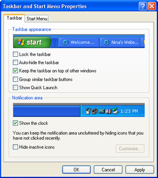
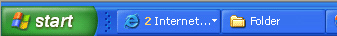
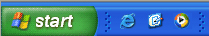
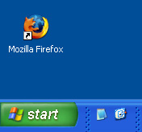
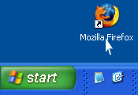
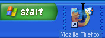
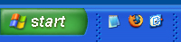

The Windows XP Task Bar
This tutorial assumes that you have set the Control panel to Classic
View. To see how to do this, click this link (opens in a new window):
Set the Control Panel to
Classic View
You can change the settings on the Windows XP Taskbar (that thin strip
running across the bottom of your screen - from the Start button to
the clock). Play around with these settings as we go along!
To get at the settings for the Taskbar, click Start and
then Control Panel. From the Control Panel, double click Taskbar
and Start Menu. This will bring up a dialogue box. You can also
bring this dialogue box up by clicking the Taskbar with your Right mouse
button. From the menu, select Properties. You should see the
following:

Lock the Taskbar
Some people like to have the Taskbar at the top of the screen, or at
the sides. To move the Taskbar, you click on it with the left mouse
button. Keep the mouse button held down and drag to the very edges of
your screen, or to the very top. Let go of the left mouse button and
your Taskbar will be relocated. To stop this from happening, put a tick
in this box Lock the taskbar.
Auto-hide the Taskbar
If you want you're your Taskbar to disappear when you move your mouse
over it, place a tick in the box Auto-hide the Taskbar. If you've accidentally
enabled this, and are getting tired of your Taskbar hiding every time
your mouse is at the bottom of the screen, then take the tick out.
Keep the Taskbar on top of other windows
If you have this box unticked then the Taskbar will disappear altogether
when you have a programme maximized on your screen. It means, for example,
that you won't see the clock or the Start button if you're typing away
in Microsoft Word.
Group similar Taskbar buttons
By similar, Microsoft mean similar programmed. It's when you have say
Internet Explorer windows staked one on top of the other. Put a tick
in the box and you may see the preview window at the top of the Taskbar
properties page change to this:

The number 2 means two Internet Explorer windows are open. To see which
pages you have open, click on the white arrow.
Show quick launch
Arguably the most useful item on the Taskbar! When you put a tick in
this box, you'll see some shortcuts appear, just to the right of the
green Start button. This allows you to click the shortcut and quickly
launch the programme. If you've ever had a version of Windows before
XP then you would have seen this all the time. But of you upgrade to
XP then it's hidden by default. To get it back, put a tick in the box
Show quick launch. You'll then see something like the following appear:

The three new icons are, from left to right, shortcuts to Internet
Explorer, a shortcut to quickly minimize or maximize all open programmes,
and a shortcut to the Windows Media Player.
You can delete these and add your own. Right click an icon, and then
select delete from the menu that appears. To add a quick launch shortcut
to a favourite programme, you can drag and drop into this area. The
image below shows the process in action. We want to drag the Firefox
icon to the Quick Launch area.
Click on an Icon with your Left mouse button:

Hold down the left mouse button and drag to the quick launch area:

Let go of the left mouse button when the cursor changes to a black
line:

When you let go of your left mouse button, the new icon should appear
on the Quick Launch bar. Click it once to start the programme:

Hide Inactive icons
The inactive icons are the ones near the clock. If you have too many
icons there, then they can occupy a lot of the Taskbar area. Much more
than you'd like. To hide the ones you don't use often, put a tick in
the box Hide Inactive Icons. Your taskbar will then change to this:
The white arrows indicates hidden icons. Move your mouse over the arrows
to reveal the hidden icons in the Taskbar.
NOTE: We've missed out Show the clock. It does exactly what it
says on the tin - shows or hides the clock in the bottom right of the
screen. If your clock has gone missing, then put a tick in the box.
<--Back One Page Move
on to the Next Part-->
<--Back to the
Beginner's Computing Contents Page
View all our Home Study Computer
Courses
 home
home